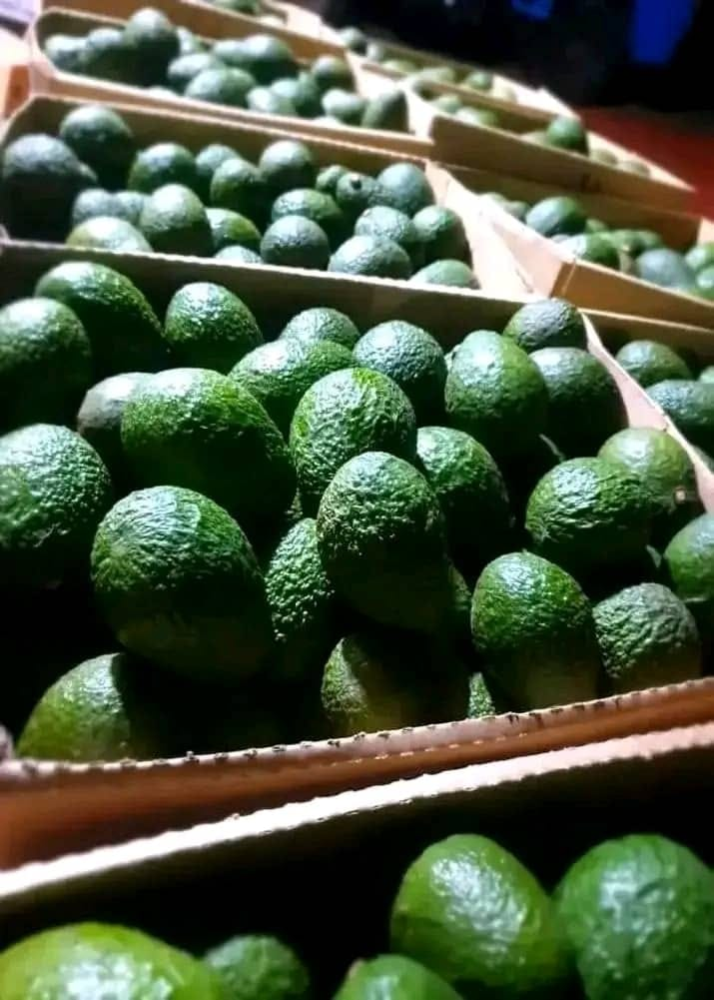

Integrated enterprise portfolio
Four fields.
One cycle.

A · Circular biotechnology
Avocado Bio-Upcycling
Organic avocado seed waste is recovered and developed into high-value bio-powders, functional herbal teas and cosmetic ingredients described in HIH’s research portfolio as rich in naturally occurring polyphenols and antioxidants.
- Zero-waste circular economy model
- Laboratory training for local women
- Academic grant-supported research
- Product development and value addition

B · Civil & environmental engineering
Herbert Skills Water Restoration
Infrastructure restoration along the Muduma–Mpigi corridor is designed to protect clean water sources and reduce damage caused by erosion and uncontrolled runoff.
- Deep-well desilting and water purification
- Stone-masonry drainage-channel construction
- Erosion control and flood mitigation
- Community water-resource protection

C · Precision agriculture
Commercial Livestock Operations
HIH’s agricultural portfolio includes layer poultry egg production and bio-secure piggery units, with attention to animal health, operational efficiency and responsible waste use.
- Structured feed and health scheduling
- Bio-secure housing structures
- Layer poultry and piggery operations
- Organic manure integration for agroforestry

D · Reforestation & social impact
Community & Agroforestry
Multi-strata agroforestry and community environmental campaigns bring together ecological restoration, practical skills and youth participation.
- Multi-acre indigenous tree planting
- Sports-led environmental campaigns
- Local women’s technical skill building
- Community-led land rehabilitation
Work across the cycle
Explore a project with HIH.
For venture, research, community or implementation partnerships, speak directly with the hub.
Contact HIH →